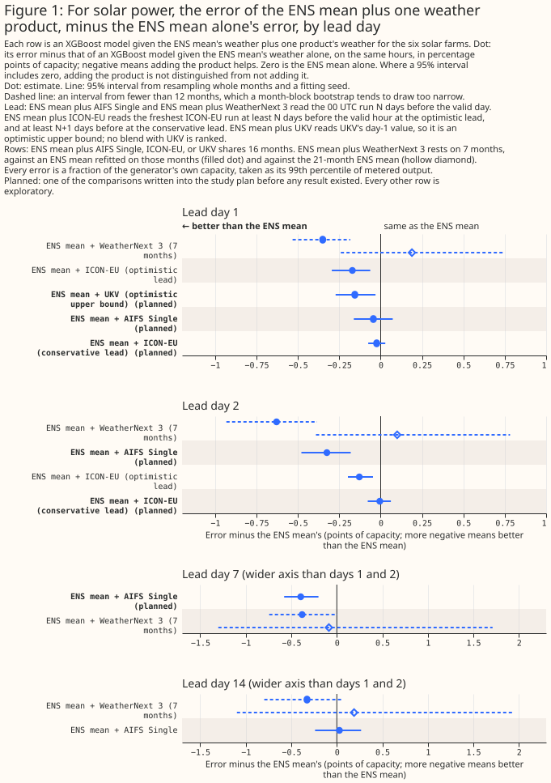
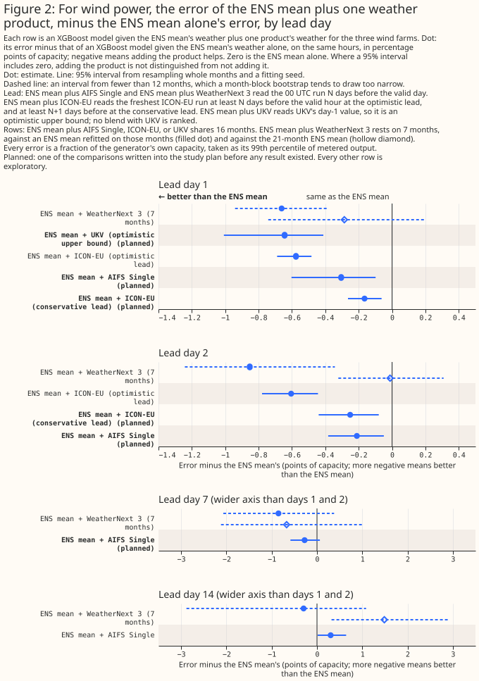

Which single weather forecast should be added to ECMWF's ensemble mean first?
At 6 solar farms and 3 wind farms in Lincolnshire, adding one weather forecast to the mean of the
European Centre for Medium-Range Weather Forecasts (ECMWF) ensemble forecast (ENS) lowered the power
forecast's error in some of the 32 (blend, setting) combinations tested, and the page can name a
first product only for solar at day 2. Each comparison gives an XGBoost model (a gradient-boosted
tree model) the ENS mean's weather plus one product's weather, and scores the power forecast as a
mean absolute error in percentage points of the generator's capacity. A negative difference means
the added product helps. Differences are the blend's error minus that of an XGBoost model given the
ENS mean alone, with 95% intervals from resampling whole months and a fitting seed. Every result is
on the single rows (the 16 months from March 2025 in which the 00 UTC run of AIFS (Artificial
Intelligence Forecasting System) Single, ECMWF's machine-learned forecast, lies inside one version
era), at the primary hyperparameter setting with the sensitivity setting in brackets, and is
uncorrected for multiplicity unless the text says otherwise. The exception is WeatherNext 3 (WN3,
Google DeepMind's machine-learned forecast), which has 7 months and is fitted at the primary setting
only.


How this page was made. The research question came from a human. Everything else — the code behind every result, the analysis, the figures, and the text — was written by Claude, Anthropic's AI model (for this page, Claude Sonnet 5.5). Several independent Claude reviewers have checked the method, the evidence, and the prose adversarially.
Key findings
- At wind day 1, adding ICON-EU (the German weather service's regional ICON model for Europe) at the optimistic lead (exploratory; an upper bound on a live service's gain) lowers the error by 0.58 points [0.48, 0.69] (0.55 at sensitivity), from the ENS mean's 8.20%. The result survives a Bonferroni correction. At the conservative lead the gain is 0.165 [0.063, 0.264] (0.158), which does not survive the Bonferroni correction (wind results).
- At solar day 2, adding AIFS Single lowers the error by 0.33 points [0.18, 0.48] (0.27) from 10.13%, survives the Bonferroni correction, and beats the optimistic ICON-EU blend by 0.20 [0.03, 0.37]. At sensitivity that difference's upper bound is -0.000, on the line (solar results).
- At solar, ICON-EU at the conservative lead shows no detectable gain at day 1 or day 2. A gain above 0.08 points is excluded at both days and both settings. The conservative lead is older than a live service would read, so the result does not show that ICON-EU adds nothing.
- At wind day 1, adding AIFS Single lowers the error by 0.31 points [0.10, 0.60] (0.17 [0.07, 0.28]). At wind days 1 and 2, AIFS Single and ICON-EU are not separable, except that AIFS Single is worse than the optimistic ICON-EU blend at day 2 (+0.39 [+0.25, +0.59], +0.29 at sensitivity). The optimistic blend is an upper bound for ICON-EU, so the rule does not rank ICON-EU above AIFS Single.
- UKV (the Met Office's UK variable-resolution weather model) at day 1, an optimistic upper bound, lowers the wind error by 0.64 points [0.41, 1.01] (0.46). The solar gain, 0.16 [0.03, 0.27], fails the Bonferroni correction.
Introduction
The question is which one weather forecast to add to the ENS mean first. The matched-lead page scores each product alone against ENS and tests one blend of ENS with two products. AIFS Single is ECMWF's machine-learned forecast. ICON-EU is the German weather service's regional forecast, and UKV is the Met Office's UK forecast. The ICON-EU blend is fitted at two leads. The optimistic lead reads ICON-EU's freshest run at least N days before the valid hour, where N is the lead day. The conservative lead reads the run at least N+1 days before.
No ICON-EU blend uses the lead a live service would get. ENS and AIFS Single read the 00 UTC run, so their day-1 leads run from about 24 to 47 hours. The optimistic blend reads a run fresher than ENS's for most hours, and the conservative blend reads a run older than ENS's for every hour. The two blends therefore bracket the live value: the optimistic blend is an upper bound on ICON-EU's gain and the conservative blend a lower bound. A live 09:00 UTC issue would read roughly the 00 or 03 UTC ICON-EU run, about as old as ENS's. This page fits UKV at day 1 only, and UKV's day-1 value probably reads a run fresher than a 09:00 UTC service would, so its blend is an optimistic upper bound and is never ranked.
| Product | Days fitted | Rows |
|---|---|---|
| AIFS Single | 1, 2, 7, 14 | single: 16 months |
| ICON-EU, optimistic and conservative lead | 1, 2 | single |
| UKV | 1 | single |
| WN3 | 1, 2, 7, 14 | wn3: 7 months (February to April and June to 10 September 2026) |
Data and methods
Each blend is compared with an XGBoost model given the ENS mean alone, and with a control of equal
column count. The control shuffles the product's columns among hours that share a generator, a
year-month, and an hour of day. The rows, folds, settings, seeds, and GPU device are those of the
saved AIFS Single blends in nwp_forecast_comparison_aifs_blends, which this study reuses. The
fitting script fits the ICON-EU, UKV, and WN3 arms, and refits the five AIFS Single (arm, setting)
pairs that folder lacked. The fitting script raises unless its build stamp and every new arm's
(site, time, seed, fold) keys equal the saved ones.
Five contrasts were planned before any fit. C1 is the conservative ICON-EU blend minus ENS at days 1 and 2. C2 is the AIFS Single blend minus ENS at days 1, 2, and 7. C3 is the UKV blend minus ENS at day 1. C4 is each blend minus its control. C5 is the AIFS Single blend minus each ICON-EU blend at days 1 and 2. Every other row is exploratory, including the optimistic ICON-EU blend, WN3, and day 14.
The ranking rule was fixed before any fit. A blend lowers the error at a lead only if the blend minus ENS and the blend minus its control both have an upper bound below zero at both settings. AIFS Single ranks above ICON-EU only if C5 against the optimistic ICON-EU blend has an upper bound below zero at both settings. ICON-EU ranks above AIFS Single only if C5 against the conservative blend has a lower bound above zero at both settings.
Results
Solar results
Adding AIFS Single lowers the solar error at day 2 and day 7 (uncorrected) but not at day 1. The differences are -0.044 [-0.162, +0.073] at day 1, -0.325 [-0.479, -0.181] at day 2, and -0.396 [-0.578, -0.201] at day 7. Only the day-2 result survives the Bonferroni correction at both settings. At sensitivity day 2 is -0.265 [-0.384, -0.136].
The conservative ICON-EU blend gains nothing detectable. The differences are -0.024 [-0.075, +0.028] at day 1 and -0.005 [-0.078, +0.062] at day 2 (+0.001 [-0.048, +0.055] and -0.011 [-0.073, +0.049] at sensitivity). The optimistic blend gains 0.171 [0.063, 0.295] and 0.129 [0.046, 0.198], which fail the Bonferroni correction at sensitivity (+0.001 at both days). The UKV blend gains 0.156 [0.031, 0.272] (0.139), which fails the correction.
AIFS Single beats both ICON-EU blends at day 2, and the gap to the optimistic blend is fragile. C5 gives -0.319 [-0.465, -0.175] against the conservative blend and -0.195 [-0.373, -0.029] against the optimistic blend, with sensitivity values -0.255 and -0.136 (upper bound -0.000). At day 1 the two products are not separable.
Wind results
Adding ICON-EU at the optimistic lead (exploratory; an upper bound on a live service's gain) lowers the wind error at both days. The differences are -0.576 [-0.689, -0.483] at day 1 and -0.605 [-0.779, -0.444] at day 2 (-0.547 and -0.486 at sensitivity), and both survive the Bonferroni correction. At the conservative lead they are -0.165 [-0.264, -0.063] and -0.251 [-0.440, -0.080] (-0.158 and -0.144), and neither survives it.
Adding AIFS Single lowers the wind error at day 1 and survives the Bonferroni correction. The differences are -0.305 [-0.603, -0.099] (-0.167 [-0.278, -0.073]) at day 1 and -0.211 [-0.383, -0.049] at day 2 (-0.200), which fails the correction. At day 7 the primary difference is -0.274 [-0.586, +0.064] and the sensitivity difference -0.361 [-0.529, -0.183].
AIFS Single and ICON-EU are not separable at wind day 1 or day 2, except that AIFS Single is worse than the optimistic ICON-EU blend at day 2. C5 against the optimistic blend is +0.270 [-0.050, +0.484] at day 1 and +0.394 [+0.250, +0.587] at day 2 (+0.380 and +0.286). Against the conservative blend it is -0.140 [-0.462, +0.097] and +0.040 [-0.176, +0.275]. The optimistic blend is an upper bound for ICON-EU, so the rule does not rank ICON-EU above AIFS Single.
The UKV blend lowers the wind error at day 1. The difference is -0.644 [-1.008, -0.412] (-0.457 [-0.562, -0.368]), and it survives the Bonferroni correction.
At wind day 14, the AIFS Single blend shows no detectable difference. By the ranking rule the primary difference, +0.302 [+0.015, +0.644], lies above zero, and the blend is worse than its own control by +0.379 [+0.065, +0.739]. The sensitivity interval, +0.115 [-0.075, +0.336], spans zero. AIFS Single alone is worse than its shuffled copy by +0.569 [+0.071, +1.080], so the AIFS Single input at day 14 appears to add noise rather than skill.
WeatherNext 3 on 7 months
The WN3 blend's differences from an ENS mean refitted on the 7 WN3 months are not differences from the 21-month ENS mean. The 21-month ENS mean is the matched-lead page's leaderboard reference. An XGBoost model given the ENS mean alone and fitted on the 7 WN3 months scores worse than the 21-month ENS mean by +0.539 [+0.085, +1.194] at solar day 1, +0.729 [+0.042, +1.654] at solar day 2, +0.377 [+0.144, +0.626] at wind day 1, and +0.841 [+0.561, +1.054] at wind day 2. Against the 21-month ENS mean, the WN3 blend differs by +0.189 [-0.241, +0.744] and +0.100 [-0.391, +0.782] at solar days 1 and 2, by -0.286 [-0.742, +0.196] and -0.012 [-0.322, +0.309] at wind days 1 and 2, and by +1.487 [+0.320, +2.897] at wind day 14. The 7 months overlap WN3's training data, so the page draws no ranking from WN3.
Multiplicity and the controls
About 2 of the 40 intervals listed per setting, across both technologies, would reach the 5% level by chance. The Bonferroni correction divides the 5% level across all 40 intervals and widens only the blend-minus-ENS intervals, which is conservative. The wind day-1 conservative ICON-EU upper bound becomes +0.010, and the solar UKV, solar AIFS Single day-7 (+0.031 at sensitivity), and solar optimistic ICON-EU day-2 (+0.007) bounds also stay above zero.
The controls are a weak guard. Controls are significantly worse than the ENS mean in 14 of the 32 (blend, setting) combinations, 9 of them solar, so the blend-minus-control test passes more easily than the blend-minus-ENS test, which decides. At wind day 2 with the primary setting, both ICON-EU controls beat the ENS mean alone (-0.118 [-0.253, -0.015] and -0.158 [-0.296, -0.056]). The primary fit of the ENS mean alone looks weak there, so the primary wind day-2 blend-minus-ENS gains are probably inflated.
Discussion: what to use
Only solar day 2 has a first choice, AIFS Single, and it is fragile. Everywhere else the rule finds AIFS Single and ICON-EU not separable. A live service would read an ICON-EU run about as old as ENS's, so expect less than the optimistic wind gain. What would change this: ICON-EU fitted at the lead a 09:00 UTC service would read, and more months of data.
Limitations and scope
The results rest on one region, 16 months, and a lead that no live service reads. The sample is weather episodes, not generator-hours, and the intervals resample months. Every figure uses the effective-capacity table built for the matched-lead study. The study does not cover blends of two products, UKV from the CEDA archive, days 3 and 5, or probabilistic scores.
Data and code availability
The inputs and fitted losses are in the private data store, and every output carries only the
anonymised site label. The code is studies/nwp_forecast_comparison/fit_product_blends.py and
dot_interval_vs_ens.py --blends, with fit_aifs.py and packages/studies/. XGBoost 3.4.1 fitted
every model on one RTX A6000 GPU.
Reproducing the figures
Remove the two nwp_forecast_{solar,wind}_blends_vs_ens.svg files from docs/studies/assets/
before the last command, because the dot script refuses to overwrite them.
D=data/studies
uv run python studies/nwp_forecast_comparison/fit_product_blends.py --lookahead-cleared \
--workers 2 --published-dir $D/nwp_forecast_comparison \
--output-dir $D/nwp_forecast_comparison_product_blends
uv run python studies/nwp_forecast_comparison/fit_product_blends.py \
--published-dir $D/nwp_forecast_comparison \
--output-dir $D/nwp_forecast_comparison_product_blends \
--report-dir $D/nwp_forecast_comparison_product_blends_report
uv run python studies/nwp_forecast_comparison/dot_interval_vs_ens.py --blends \
--output-dir $D/nwp_forecast_comparison_vs_ens_dots_blends_final